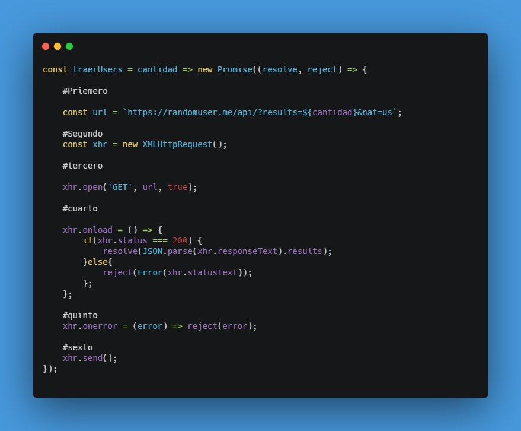
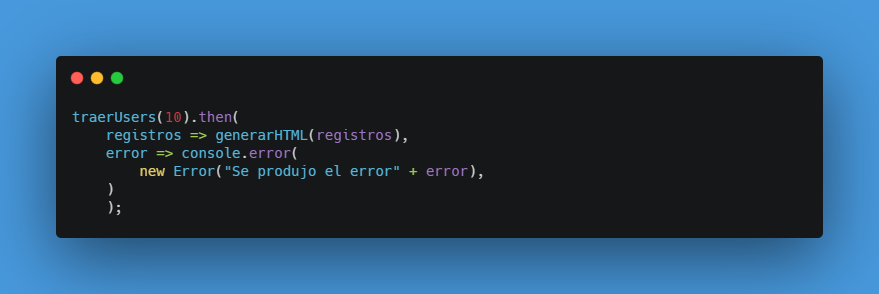
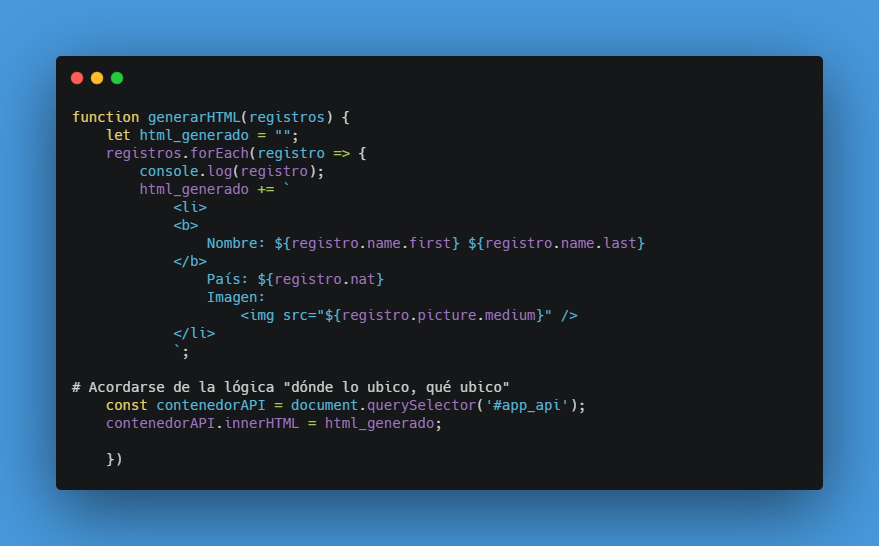

Promises
Cuando hacés un pedido asincrónico a una API tenés dos posibilidades
- Que todo salga OK. "resolve"
- Que algo salga mal. "reject"
pasos
- Se pone la url de la api a la que vamos a hacer el request.
- Se hace la llamada a AJAX
- Abrimos la conexión
- Estamos ya trayendo los registros:
- 200 es el código que todo salió bien
- El "results" viene del JSON de la API.
- Mensaje de error
- Se envía el request

Luego se accede a la petición si es exitosa con:

Luego para mostrar el html

Volver al inicio